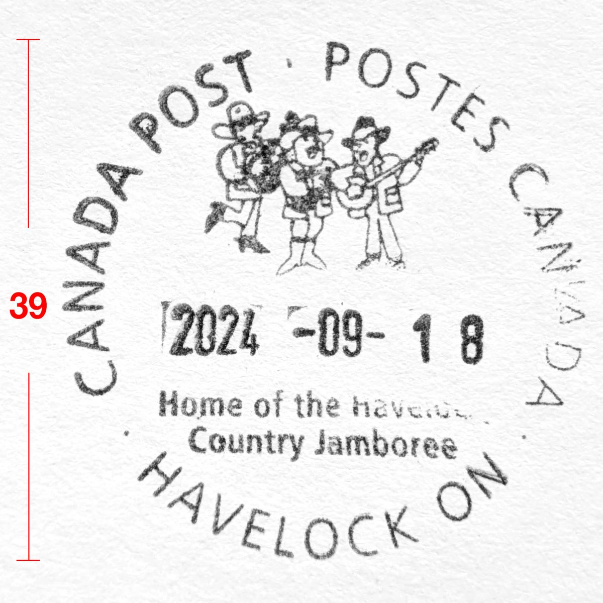

Havelock PO pictorial cancel
Home of the Havelock Country Jamboree
- Status
- Active
- Run dates
- ? to present
- Design
- "Home of the Havelock Country Jamboree"; country musicians performing music; music festival
- Ink colour
- Black
- Designer
- Unknown
- Post office
- Havelock PO
6 George St E
Havelock, ON
K0L 1Z0 - Subjects
- music, art, performance, country music, festivity, human, performer, singer, guitar, instrument
Collect it by mail. Send your stamped covers, with a stamped return envelope, to the post office address above. How to collect pictorial cancels by mail · en français
 Barry's Bay PONew
Barry's Bay PONew Barry's Bay POOld
Barry's Bay POOld Gravenhurst STN MainOld
Gravenhurst STN MainOld Newmarket STN MainNewmarket Clock Tower
Newmarket STN MainNewmarket Clock Tower